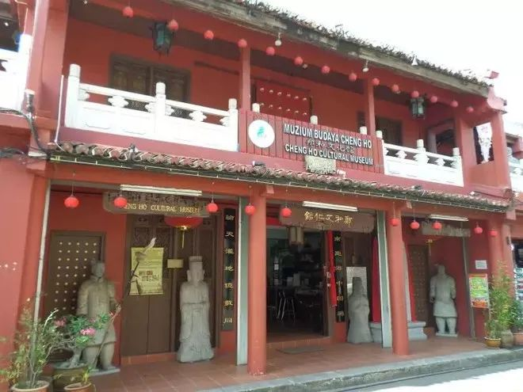

武汉疫情被全球通报后，华人都遭遇了什么？
原文链接 备份链接 数据来源：腾讯新冠肺炎疫情实时追踪 截至2月1日上午6时，海外国家疫情情况 截至2月1日上午6时， 全国新型肺炎确诊病例超过11180例， 海外国家共确诊124例。 北京时间1月31日，世界卫生组织WHO宣布 将此次 …
*** ***
***
当许知远在 2020 年 1 月前往吉隆坡旅行时，原本是想跟随孙中山与康有为的足迹，继续他对中国近代变革的探寻，但国内的疫情随即占据了他的注意力，也影响了这次旅程。与今天摆在我们面前的现实困境相似，一百多年前，孙中山、康有为、梁启超也曾面对着同样可怕的疾病——清王朝的政治痼疾。
本文原载于 FT 中文网。
VOL.07 / FEBRUARY 14, 2020
疾病蔓延时的旅行：
马六甲的低语
我鼻子一酸，眼泪溢出来。在马六甲的一家露天火锅店，我情绪失控。在朋友圈一段视频中，一个母亲正在哀嚎，请求管理者让自己罹患白血病的女儿过桥看病。
自武汉 1 月 23 日封城，隔断与封闭，成了应对疫情扩散的流行手段。突然之间，省与省、县与县、村与村、小区与小区之间，都被路障、壕沟隔开了。一个被铁路、公路、桥梁、河流连接的中国，变成了一个个网格，带着袖箍、手持缨枪的人站在路口。
这可以理解。这显示的是一种习惯性思维，它先是过分迟缓、否定事实，接着是过度反应。对于基层组织，你必定会使用习惯动作，用高音喇叭宣讲，在墙上挂上标语，派人上门测每个人的体温。它有着鲜明的中国特征：令人惊异的动员力与穿透力，但它也粗暴、缺乏弹性，执行者会陷入某种“行动主义”，为了行动而行动，不关心行动的效果与后果。它也是一个零和社会的心理折射，当一种陌生的、不可描述的威胁到来时，人们的本能反应是防卫与排斥，因为外来者意味着危险。
它也仍令人意外。这个景象，与这个国家在 21 世纪的自我期许大相径庭。在应对一场后现代疾病时，它所使用的却是前现代的方式。一些时候，它像是卡夫卡与义和团的混合。一个个体，不管你是路过的司机、临时的租客，还是急需就诊的病人——只要你的疾病并非新型冠状病毒，那么你的具体困境与需求，都被拒绝与忽略。无法释放的恐惧，还会转化成仇恨与伤害。于是，你看到双重灾难的同时上演，第一重是流行病本身，第二重则是伴随它的不当反应。
这个桥上的呼喊的母亲，是诸多伴生悲剧里的一个片段，它恰好此刻出现在我眼前。马六甲的夜晚微风习习，这座曾经的贸易中心，如今变成一座休闲城市。比起槟城，这里更富有历史感，不仅有英国人的遗产，葡萄牙人和荷兰人也留下了更显著的欧洲印记。郑和的名字与形象则无处不在，提醒着人们，自 15 世纪初，中国人就以征服者的面目出现在这里。那也是中国的辉煌时刻，倘若达伽马、哥伦布看到郑和的船队，定会大吃一惊。一些历史学家还宣称，是中国人最早发现了美洲。真实历史是，这些欧洲小国的探险家们，最终征服了世界，而郑和的史诗性航行戛然终止，宝船腐烂、埋入地底，工匠们甚至遗忘了造船的技术。在中国盛大、不可阻挡的表象之下，常蕴含着某种自我摧毁的因素。

▲马六甲圣地亚哥古城门，荷兰人统治时期留下的遗迹。
散步在残存着城堡、教堂、庙宇，小店云集的鸡场街上，你已很难想象这里曾是地缘政治的中心，文明冲突与融合的前线。人们为了争夺香料、黄金、丝绸、瓷器而来，空气中弥漫着欲望与金钱，那是枪炮与商品驱动的历史。如今，它像是活在了历史之外，一座静止的主题公园，世界各地的旅行者们在此放松神经，而不是参与历史。
早晨，我去施医生的诊所检查脚伤，和这位福州来的、在新加坡国立大学获得学位的医生闲聊几句。中午，我顶着烈日，穿过一堵漂亮的、西班牙风格的墙壁去吃海南鸡饭，这里的白切鸡与灯笼椒尤其诱人。傍晚，我则坐在“地理学家”饮着金汤力读书、发呆，看人群来来往往。这个酒吧的名字提醒我此地曾见证了风云际会，它所放的音乐却是丽江式的——从邓丽君到加州旅馆，中间还穿插着杨坤与张学友。中国变得遥远。
现实会以另一种方式闯入。“昨晚三点才睡”，老江抱怨说。他身形高大健壮、声若洪钟，一望可知是个西北汉子、且受过军事训练。在郑和博物馆的一间闷热的会议室，我认识了这个新朋友。他是新到马六甲的中国移民。出生于甘肃的他，从军队退役后下海经商。他在中国的高速增长中分得一杯羹，周游过世界，却在途径马六甲时喜欢上这里。此地不再是大航海时代船来船往的港口，或是大英帝国的一个属地，它是一个新生国家马来西亚的一部分。江先生加入马来西亚政府“第二家园”计划，获取居留权。

▲马六甲郑和博物馆
与在中国过分紧张的节奏、无处不在的污染相比，这里人人穿人字拖出门，日日天高云淡，他还能躲避掉中国社会过分复杂的人际关系、权力关系。他还可以保持某种优越感——比起西方城市那种仍可感知的种族意识，甚至不远处的新加坡的势利，在马六甲，做一个中国商人，令人心安。同时，地理仍发挥着作用，他不想距离中国太远，这既是情感上的，也是生意上的。过去十多年，中国是世界经济增长的重要来源，也是这个时代的历史动力。
这一次，中国震惊世界，不是依靠它的制造机器、消费狂潮，而是因为一场疾病。武汉成了全球新闻的焦点。一股恐慌席卷全球，谁也不清楚这次的病毒因何而起，又严重到何种程度？它的传染速度惊人，配上如此大的人口基数，与开春时节人们高度的流动性，它会导致怎样的结果？
但世界也以另一种方式感知了中国的冲击。这台长期持续运转的生产与消费机器，突然停顿下来，它带来了真空感。马六甲就像是这状态的缩影。突然失去了中国游客的古城，空空荡荡，小店老板们怀念起忙碌的时光，中国客人虽然过分喧闹，却也意味着生意兴隆。口罩是中国冲击的另一种的明证，每一家药店、便利店都已售罄，即使少量的中国游客，也足以扫清他们所有的存货。这也是一个崭新的全球现象。昔日，智利的铜矿、巴黎的奢侈品店、澳大利亚的地产经纪，都感受到中国的购买力，如今，所有的口罩都消失了。
江先生正是为口罩而忙到凌晨三点。看到家乡的疫情日趋严重，他购买了一批口罩寄给医院。货物抵达兰州后，却陷入了医院与红字十会之争，后者坚持它有统一的发放权。他不得不忙于各种沟通，寻求领导出面。这类事情或许也是迫使他离开家乡的原因之一，人们似乎在无休止地制造毫无必要的麻烦。
P 君也在为医疗设施四处奔忙，试图将印尼、马来的公益组织与中国的基金会联系起来。多年前，我与 P 君在北京有过一面之缘。他刚刚辞去一家旅行公司的高管职位，投身于公益事业，帮助的是国内很少有人涉及的国际难民。他前往金三角的难民营，也去印尼参与灾后重建。他热情、无私，身上有国际志工的那种特殊气质，让你觉得，不管你有何种困难，都可以向他张口，他也总值得信赖。这种气质对我始终是个谜。到底是何种力量，驱使他们离开自己的舒适地带，投入这样没有现实回报的事业？在剑桥的学生中，在香港的讨论会上，在旧金山的街头，我都讲过这样的气质。除去志趣高尚，是否还有更隐秘的动力？他们也在逃离自己的生活吗，总是渴望被更多人需求吗？
过去一年，P 君住在马六甲，成为一名华人学者兼商人陈先生的助手。这位陈先生亲历了战后东南亚的动荡与新生。他曾是南洋大学最早的毕业生，这所大学是陈六使与林语堂共同建立的。他历经马来西亚与新加坡的先后独立，也曾在印尼教书、著述。时局迫使他放弃了学术生涯，成了一名商人。在最初的艰难的探索之后，他成为一家基建公司的创始人，并成为新加坡经济奇迹的参与者与受益者。二十年前，当他重返马六甲时，发现昔日成长的老城已破败不堪，曾经盛极一时的华人富商大院，已残垣断瓦、乱草飞生。他几乎以一手之力，复兴了古城，不断涌现的南洋风格的民宿、娘惹餐厅、海南鸡饭、各式会馆、设计工作室，令历史的遗产化为当代生活的景观。他更是对郑和充满热忱，认定他是个被低估的世界旅行家，更重要的是他代表了与欧洲不同的中国特征——和平交流的、而非扩张的。他将自己一家酒店命名为“富礼”。

▲马六甲所处地理位置
对于 P 君来说，陈先生代表了一种在中国反而已失去的传统。他带我去看傍晚的青云亭。这个建于 17 世纪的庙宇，直到 1911 年前，都是当地华人社会的权力中心。主要修建者李为经的个人经历，也凝结了本地华人社会的某种气质。这个在画像中消瘦、儒雅的人物，是典型的明朝读书人。三十岁时，他遭遇了历史之巨变，这一年，李自成攻陷北京、崇祯皇帝自缢煤山、吴三桂引清兵入关，这个厦门人则南来马六甲经商。当北方的蛮族占领中国的大陆时，一个海上中国也迅速兴起，它以一位叫郑芝龙的海盗为首领，覆盖了中国东南沿海、日本南部、以及南洋这片广阔海域。他的儿子郑成功更是将贸易能力、利润转化成政治力量，他击退了荷兰人在台湾的统治，并想反攻新生的满人政权。
夹在这股历史力量之中的李为经，在马六甲开启了自己的新人生。他成为荷兰人治下的华人领袖，被委任为甲必丹。除却处理华人社区的内部纷争，他也努力重塑中华文化传统，他向荷殖政府购置三宝山，以纪念郑和。他也努力拒绝遥远中国的历史浪潮，在碑文上，拒绝使用清王朝的年号，而使用“龙飞”，在他心中，明才代表正统。
坐在傍晚青云亭的长椅上，香火升腾。人们跪拜、祈祷，视线越过庙墙，一个精瘦男子正爬到屋顶发呆、看云。四百年来，因为远离了中国内部的王朝更迭、各式革命与运动，此地意外地保持了某种历史的连续感。
P 君与我坐在火锅店，两杯啤酒下肚后，这种边缘的悠闲感，突然消失了。中国此刻的危机，以另一种方式到来，作用在每个个体上。你看到武汉不断上演的惨剧，走上街上的人突然倒地，投医无门、又怕传染家人的患者跳下大桥，未染病者生活于蔓延的恐慌之中。即使是一个远离灾难现场的旅行者，竟也滋生出一种日渐增加的羞辱感，作为一个中国人，你为自己的身份不安，你甚至恐惧遇到自己的同胞。随着世界卫生组织宣布中国疫情为紧急状态，一系列国家已以某种方式对中国关闭了大门，一种飘零感突然到来。我的旅行签证即将到期，犹豫是要回到北京，还是继续旅行，下一站又在哪里？一种无力感也伴随始终，我不知该怎样参与其中。
那个哭嚎的母亲的视频，就在此刻闯入我视线，那种绝望以及随之而来的愤怒与无奈，充盈我心里。或许还因为趁着夜色、酒精与故人重逢，加之各种观点、信息带来的疲惫不堪，我的眼泪涌出，情绪突然找到了某种出口。
P 君拍着我肩膀，讲起他在泰北难民营的经历。那里的难民是昔日国民党军队的后代，像是历史的弃民，被“红色的污泥，白色的恐惧”左右的“亚细亚的孤儿”。他们来自中国历史不断上演的悲情时刻中的一个。但一个看起来已重获富强的中国，却似乎仍未摆脱这种“悲情”。我讨厌自己的泪水，它是真实的，也是怯懦、无能的。
翌日，我去了施医生的诊所。我脚上的伤口愈合，可以拆线，我也要离开马六甲。施医生仍旧慢慢悠悠地说，病毒似乎并不可怕， 不过是一种更重的流感，他也多少觉得美国人在夸大其词，不无对抗中国崛起的意图。他还说，中国定能度过难关，他被中国人能在十天内建立起一座全新医院的速度深深震惊了。


图片来自网络
《单读》2020 全年订阅计划
2020 年，《单读》寻找订阅读者，寻找会员，寻找荣誉出版人，进行中！

▲点击上图或扫描图中二维码，加入《单读》2020 全年订阅计划
《单读 23 · 破碎之家》已经上市****
*它又意外地应景了*
***点击小程序购买阅读***
▼▼历史的真空
原文链接 备份链接 数据来源：腾讯新冠肺炎疫情实时追踪 截至2月1日上午6时，海外国家疫情情况 截至2月1日上午6时， 全国新型肺炎确诊病例超过11180例， 海外国家共确诊124例。 北京时间1月31日，世界卫生组织WHO宣布 将此次 …
原文链接 备份链接 大家好，我是田静。 新型冠状病毒疫情发生后，除了国内民众举全国之力抗击病毒外，海外华侨华人也纷纷发起募捐，用自己的方式表达对祖国疫区同胞的牵挂。 但是，随着疫情影响的加剧，继英国暂停中英航班后，已经有20个国家，作出了 …
原文链接 备份链接 图片来源：图虫 记者：刘世龙 “ 据界面新闻检索公开报道，疫情发生以来，已有多位医护人员倒在了疫情防控救援工作一线。 ” 2020年2月14日，国新办就疫情防控最新进展特别是关爱医务人员举措举行新闻发布会。国家卫生健康 …
原文链接 备份链接 Photo by Serhii Maksymiv on Unsplash 记者：郑萃颖 “ 在2020年第一季度，预计疫情对调整后税息折旧及摊销前收益的影响在1000万美元至2000万美元。 ” 希尔顿集团近日发布 …
原文链接 备份链接 图、文｜吕萌 编辑｜ 林鹏 随着延长假期的结束，疫情之下，“平安返程”成为每一位旅客心中的期盼。 在北京站，由大连始发的D31次动车缓缓驶进车站，每一位下车的旅客手中都拿着一份旅客信息登记表。表中填着每个乘车人的姓名、 …